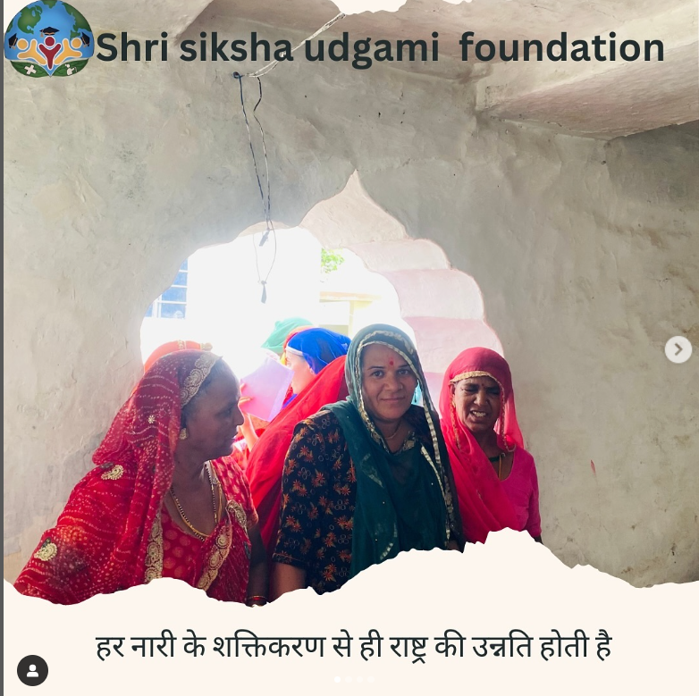
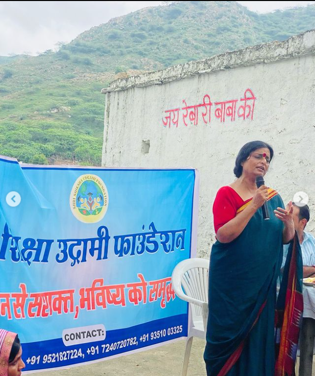
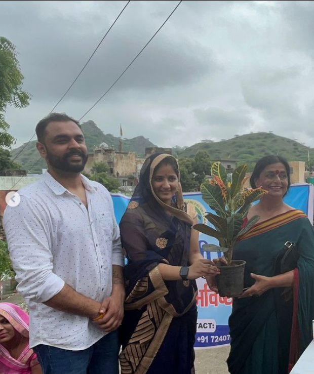

महिला सशक्तिकरण पर
किए गए इवेंट का संपूर्ण विवरण
इवेंट की तारीख: [3 अगस्त 2024 शनिवार]
स्थान: [वार्ड 39, राजकीय उच्च माध्यमिक विद्यालय,आदर्श नगर, अजमेर]

प्रस्तावना (Introduction):-
इस इवेंट का उद्देश्य महिलाओ ंको सशक्त बनाने के लिए उन्हें राजस्थान सरकार और भारत सरकार द्वारा चलाई जा रही योजनाओ ंके बारे में जानकारी प्रदान करना था।
इस कार्यक्रम के तहत महिलाओ ंको आर्थिक, सामाजिक, और शैक्षिक रूप से आत्मनिर्भर बनाने के उपायों और सरकारी सहायता का उपयोग करने के तरीकों की जानकारी दी गई।
 कार्यक्रम का विवरण:-
कार्यक्रम का विवरण:-
1. इवेंट का उद्देश्य (Objective):-
- महिलाओ को सशक्त करने के लिए सरकारी योजनाओ के बारे में जानकारी देना।
- महिलाओ को आत्मनिर्भर बनाने के उपायों और संसाधनों की जानकारी देना।
- महिलाओ को रोजगार, शिक्षा और स्वास्थ्य से जुड़ी योजनाओ का लाभ उठाने के लिए प्रेरित करना।
2. इवेंट का प्रारंभ (Event Commencement):-
इवेंट की शुरुआत दोपहर 12 बजे हुई,
जिसमें मुख्य अतिथि
[माधवी स्टीफन मैडम, पार्षद वार्ड 39 राधिका गुर्जर] नेकार्यक्रम का उद्घाटन किया। महिलाओ के सशक्तिकरण पर मुख्य अतिथि द्वारा जोर दिया गया, और उन्होंने सरकारी योजनाओ के महत्व पर प्रकाश डाला।
3. मुख्य अतिथि और वक्ता (Chief Guests and Speakers):-
3. मुख्य अतिथि और वक्ता (Chief Guests and Speakers):-
- मुख्य अतिथि:- माधवी स्टीफन मैडम, पार्षद वार्ड 39 राधिका गुर्जर I
- वक्ता:- श्रीमती यशिका वैष्णव, महिला सशक्तिकरण वक्ता I

4. गतिविधियाँ और सत्र (Activities and Sessions):-
राजस्थान सरकार की योजनाओं पर सत्र (Session on Rajasthan Government Schemes):
इस सत्र में वक्ताओं ने राजस्थान सरकार द्वारा चलाई जा रही महिला सशक्तिकरण योजनाओं के बारे में जानकारी दी, जैसे:
-
भामाशाह योजना:-
- महिलाओं के नाम पर बैंक खाते खोलना
- वित्तीय सहायता देना
- स्वास्थ्य बीमा के लाभ देना
-
प्रधानमंत्री कौशल विकास योजना:-
- महिलाओं को स्वरोजगार के अवसर
- समूह में काम करने के अवसर
- 70 महिलाओं का पंजीकरण
- 45 महिलाओं का सफल नामांकन
-
राजश्री योजना:-
- नवजात कन्याओं के जन्म पर आर्थिक सहायता
- शिक्षा के लिए प्रोत्साहन
भारत सरकार की योजनाओं पर सत्र (Session on Central Government Schemes):-
इस सत्र में वक्ताओं ने भारत सरकार की प्रमुख योजनाओं पर चर्चा की, जैसे:
-
सुकन्या समृद्धि योजना:-
- बालिकाओं के लिए सुरक्षित वित्तीय योजना
-
बेटी बचाओ, बेटी पढ़ाओ योजना:-
- बालिकाओं की सुरक्षा को बढ़ावा
- शिक्षा को प्रोत्साहन
-
प्रधानमंत्री उज्ज्वला योजना:-
- महिलाओं को मुफ्त एलपीजी गैस कनेक्शन
- धुएं से मुक्त रसोई का लाभ
-
मुद्रा योजना:-
- महिलाओं को व्यवसाय शुरू करने के लिए ऋण सुविधा
5. सशक्तिकरण पर प्रेरणादायक भाषण (Inspirational Speech on Empowerment):-
वक्ताओं ने महिलाओं को आत्मनिर्भर बनने और अपने अधिकारों के लिए जागरूक होने के महत्व पर जोर दिया।
- सरकारी योजनाओं का सही तरीके से लाभ लेने का आग्रह किया।
- अपने परिवार और समाज में सकारात्मक बदलाव लाने की प्रेरणा दी।
- सामाजिक और आर्थिक आत्मनिर्भरता पर बल दिया।
6. इंटरेक्टिव सेशन (Interactive Q&A Session):-
इस सत्र में महिलाओं को अपनी शंकाएं पूछने का अवसर दिया गया।
- महिलाओं ने योजनाओं की पात्रता से संबंधित प्रश्न पूछे।
- आवेदन प्रक्रिया को समझने की जिज्ञासा दिखाई।
- योजनाओं के लाभ और उनके उपयोग पर सवाल पूछे।
- वक्ताओं ने प्रत्येक प्रश्न का विस्तार से उत्तर दिया।
5. कार्यशालाएं (Workshops):-
स्वरोजगार और वित्तीय योजना:- महिलाओ ंको स्वावलंबन के लिए उपलब्ध स्वरोजगार योजनाओ ंऔर लघुव्यवसाय शुरू करने के लिए ऋण प्राप्त करने की प्रक्रिया के बारे में जानकारी दी गई।
स्वास्थ्य और शिक्षा से जुड़ी योजनाओ ंपर वर्कशॉप:- इसमें स्वास्थ्य बीमा और बालिका शिक्षा को बढ़ावा देने के लिए उपलब्ध योजनाओ ंके बारे में विस्तृत जानकारी दी गई।
6. प्रतिभागी (Participants):-
इवेंट में लगभग [80+] महिलाएं शामिल हुईं, जिनमें विभिन्न आयुवर्ग और पृष्ठभूमि से आई महिलाएं थीं। इनमें से कई महिलाएं ग्रामीण क्षेत्रों से थीं, जिन्हें इन योजनाओ ंकी जानकारी की अत्यधिक आवश्यकता थी।
इवेंट के परिणाम (Event Outcomes):-
महिलाओ ंको राजस्थान और केंद्र सरकार की योजनाओ ंके बारे में विस्तृत जानकारी मिली।
महिलाओ ंने योजनाओ ंका लाभ उठाने की प्रक्रियाओ ंको बेहतर तरीके से समझा।
कई महिलाओ ंने स्वरोजगार के अवसरों के लिए तुरंत आवेदन करने की योजना बनाई।
जागरूकता से महिलाओ ंमें आत्मनिर्भरत और अपने अधिकारों के प्रति जागरूकता बढ़ी।
भविष्य की योजनाएँ (Future Plans):-
इस इवेंट के बाद, हम यह सुनिश्चित करेंगे कि और भी अधिक महिलाएं इन योजनाओ ंका लाभ उठा सकें। हम लगातार महिलाओ ंको इन योजनाओ ंके बारे में जागरूक करने और उनके आवेदन में सहायता करने के लिए विशेष कार्यशालाओ ं और काउंसलिंग सत्रों का आयोजन करेंगे।

धन्यवाद (Conclusion):-
हम इस सफल इवेंट के लिए सभी महिलाओ ं, अतिथियों और सहयोगियों का आभार व्यक्त करते हैं। यह कार्यक्रम महिलाओ ंको सशक्त बनाने की दिशा में एक महत्वपूर्ण कदम साबित हुआ है।
हमें आशा है कि यह जानकारी महिलाओ ंके जीवन में सकारात्मक बदलाव लाने में मदद करेगी।
← Back
Next post →